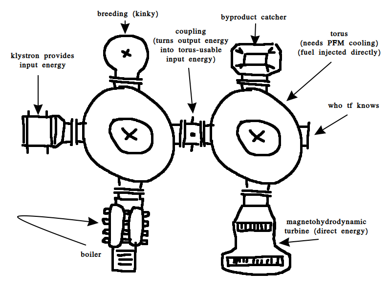

Bub's Blug
And now, a list of reactors for no particular reason
- The ZIRNOX is a cheap and simple to use reactor that utilizes the "grid" mechanics of the original small nuclear reactor while also using an internal CO2 cooling cycle. It has no slot locking feature so multi type reactors can't be properly automated, but it's easy to set up and can make both decent power and technetium quickly.
- The PWR is a fully dynamic multiblock that allows custom reactor geometry to be designed. It was made with performance and automation in mind, as all the calculations are pre-simulated when assembled, and by being strictly monotype, it's trivial to automate refueling.
- The RBMK is the poster child of NTM, having larger parts which need to be combined similar to the PWR, but its live simulation means that individual parts of the reactor can change, allowing things like localized control rod groups, changes in the neutron output as fuel depletes and accurate simulation of multiple fuel types. Automation is more tricky as it requires autoloaders, but it's worth it to obtain easy bismuth.
- The watz powerplant, despite its meager energy output, has some interesting mechanics, being a stackable pebble bed reactor with fuel becoming less reactive as it heats up, and having slot locking, which allows multi type setups whle being simple to automate.
- The ICF is the most powerful pre-DFC reactor, using external lasers that follow construction rules similar to the PWR to fuse fuel pellets which can be custom made by combinindg two valid elements, and optionally muons which reduces the required energy.
- The fusion reactor, exists.
How did this even happen
In the year 2016, the original fusion reactor was added. It was impossible to automate, made amounts of energy that weren't even useful for anything, required cold fusion cores to start (wtf?) which were uncraftable (wtf??), looked like shit, performed like shit and was expensive as balls. In 2020, the fusion reactor was reworked, becoming a multiblock that can be assembled, which was split into two separate machines, the torus and the plasma heater. Automation was now possible, and things like blankets and the breeding ability were added.But it gets worse
The model for the torus only includes two power ports, on the top and bottom of the solenoid's motors. The torus requires electricity to work, but to make power, it also requires a water input and a steam output, which means three ports. Worse, to actually use the breeding functionality with automation, it needs another two ports. Because of this, the torus received a total of 32 extra ports, two for each toroidial magnet along the ring. But the model wasn't made with those ports in mind, so it was impossible to tell at a glance that anything could connect there.The GUI was an "upgrade" mostly because things like tooltips and buttons were added, but that's about where the improvements stopped. The GUI was made before the new standard for GUIs was decided (see the old particle accelerator), which means it was aesthetically rather boring. What's worse than being ugly is being hard to actually understand, all the UI elements were strewns over the interface with little care and connected with lines vaguely indicating functionality, this was originally intended to make the GUI look more "technical" and "complicated" than it actually was. In practice, it just made it shit to use.
The plasma heater became a separate machine mainly for ease of building, since it means the heater can be connected from any side instead of having four small built-in heaters like the old fusion reactor. However, there were no dedicated ports to connect the plasma heater to, rather the pointy end just had to intersect the torus in a rather unpleasant way. The heater's hologram got a small pink effect showing where the torus would have to intersect, but a lot of people, understandably, didn't really get it, causing many to build the heater just one block shy of where it had to be. Being an "assembled" multiblock, it means rebuilding the entire heater just to move it by one block. Having multiple heaters was indeed possible, but there was no reason to do so, as the torus' plasma consumption was fixed. The whole dynamic aspect of the heaters went entirely unused, and only really caused problems.
Secret technique: Actual planning
The fusion rework as an idea started as a simple remodel, keep the janky system but make the torus prettier so it's more obvious where the ports are. Add dedicated special connectors to show how the plasma heater is connected. Simple.But then it became apparent that perhaps the GUI should be redone too. And now that the torus has four unique connectors, could we use those for something else? Could multiple heaters become viable? What else could we connect to that?
When in doubt, rip off Factorio
The first attachment idea came from Factorio Space Age, where fusion reactors don't use steam, but rather "plasma turbines" which make energy directly. Because of xkcd's occasional use of the word "magnetohydrodynamic", and it being perfectly applicable to plasma, I decided that we should have magnetohydrodynamic turbines for additional power from plasma (something that the Pyanodon mod apparently already has, which I later learned, dammit).How about...more?
And then started a public brainstorming session about fusion reactor compatible parts. Does boiling need to happen in the torus? It could be a dedicated part like the MHD turbines, after all water cooling was always optional anyway. Could we outsource the breeding chamber? That might ease automation. Could we perhaps...combine multiple toruses? And so, this graphic was created: - The torus should be reduced to its most barebones function. Plasmas are no longer dedicated fluids that need to be added for every new fuel combo, and supplied externally, rather the torus could accept fuels and produce byproducts and output energy based on a fixed configurable "recipe" (selector time, baby!) which allows fusion fuels and products to be configurable. The torus should use cooling since we're switching it to BSCCO super conductors, so that would be handled similar to how particle accelerators are cooled. Finally, plasmas would require different amounts of input energy to ignite and produce varying amounts of output energy, with the burn rate depending on how quickly fuel is inserted into the reactor.
- Input energy is supplied externally via a Klystron. I learned what a Klystron was a while ago, and I always wanted to add one to NTM solely because the name sounds cool as fuck, and I was delighted to learn that Klystrons are indeed used to power certain types of fusion reactors, so that's what we run with.
- Output energy can be used in various ways, most importantly for making energy. A regular boiler (probably using SDS because of the neat 1:1 conversion ratio) and the aforementioned MHD turbine, which would create energy directly and have better efficiency, although at a substantially higher cost.
- Output energy could also be used to create byproducts (both solid AND liquid, potentially eliminating the need for the weird ionized particle item), although I'm unsure of whether it should be mandatory or simply increase the yield of a built in byproduct catcher inthe torus.
- Breeding recipes return once again, but in a dedicated attachment, allowing lithium to be quickly converted to tritium, along with probably most irradiation recipes the RBMK can do.
- And finally the best of all: The coupler. This thing could convert fusion output energy back into input energy to supply a second torus. Some plasmas may have a higher ignition temperature which demands multiple Klystrons, which prevents use of other attachments as the ports are limited. Instead, higher tier plasmas could be ignited via a second torus using a weaker plasma. Better yet, the first torus could provide byproducts which are usable fusion fuel for the second torus, in addition to providing the ignition energy. This means that, instead of just being a torus with some crap stapled to it, fusion reactors could finally have proper "setups" of multiple parts that actually interact with one another in meaningful ways.
- A standardized system with standardized ports means that, should we ever decide to do so, we can add more components later on. A specialized plasma-powered furnace? A plasma welder? Perhaps a cannon that fires plasma bolts? Who knows.
< i want to see the settings camel again